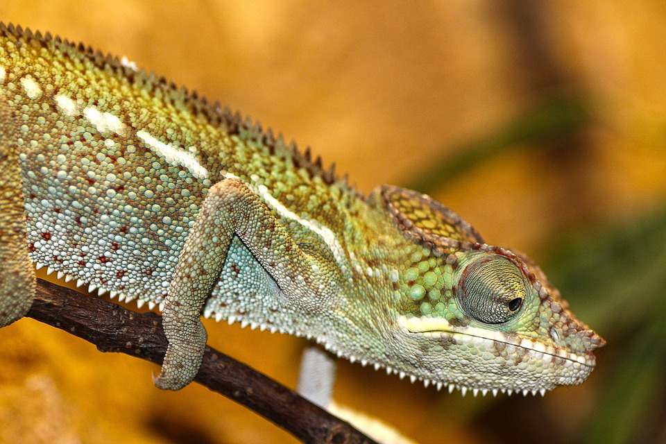

Adopció Rocky
-
Octubre 12, 2016
 Sexe: Mascle Raça: Camaleó Mida: Petit Naixement: Desconegut Hem trobat un camaleó que es diu Rocky, és un camaleó que vam trobar a Sant Celoni. Ara està buscant casa ja que ningú l'ha reclamat.